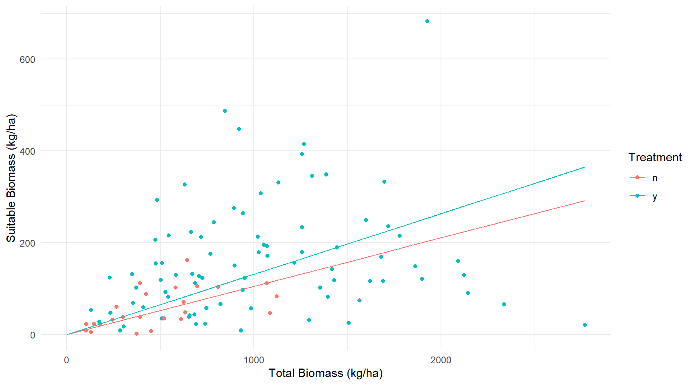
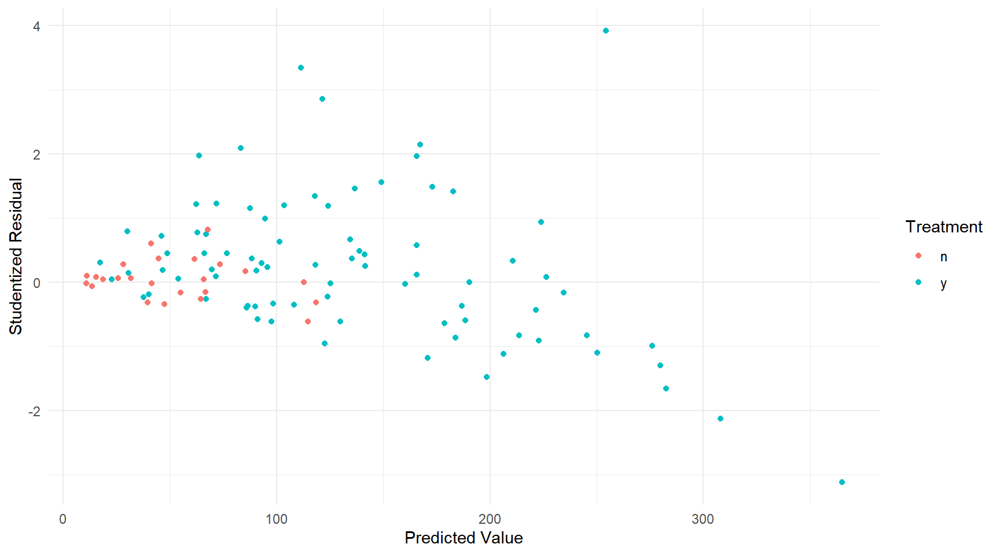
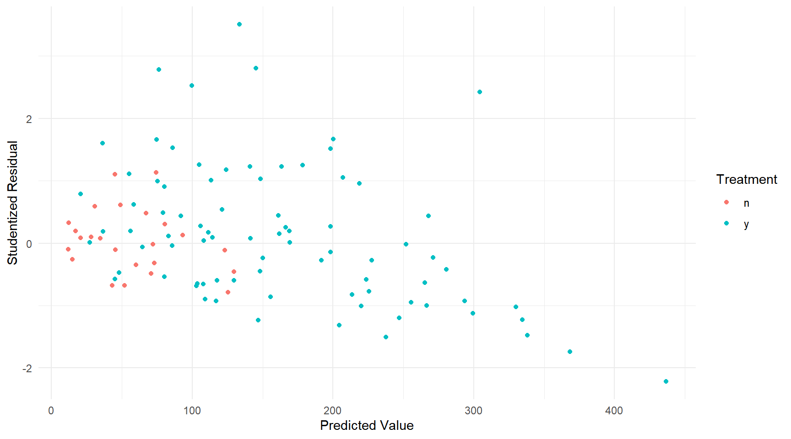
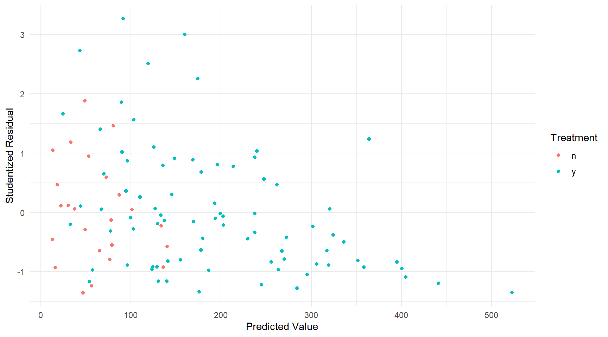
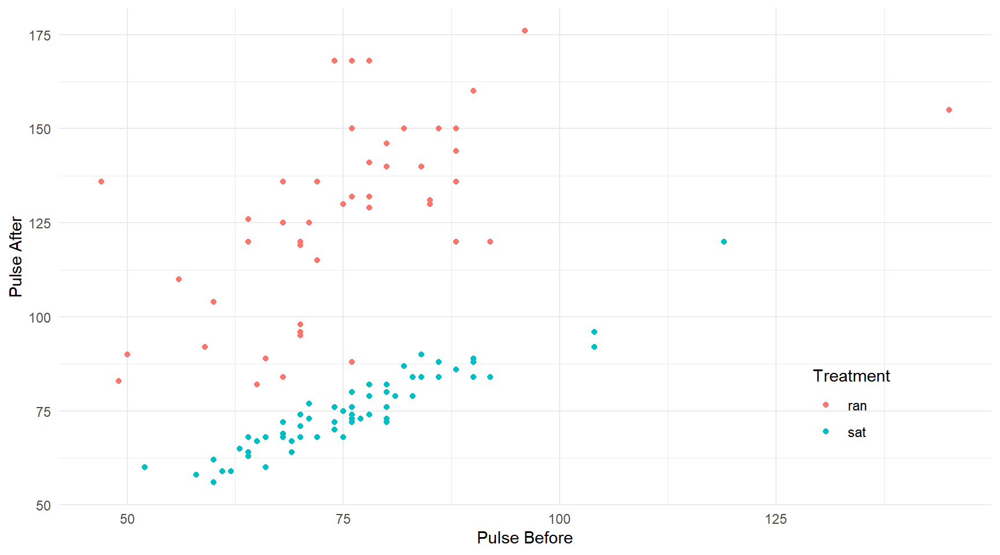
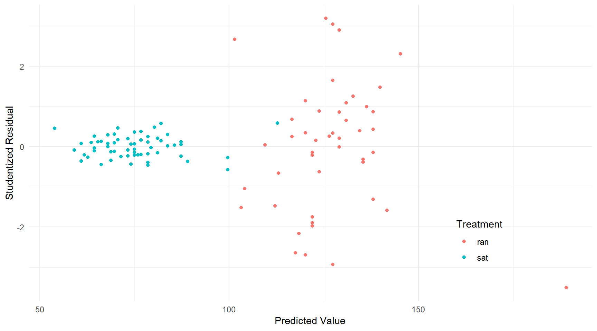
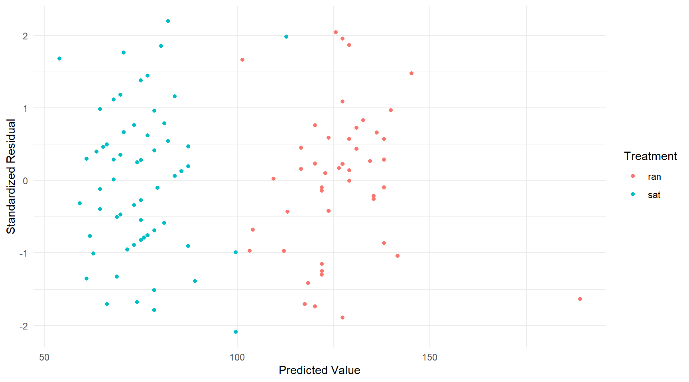
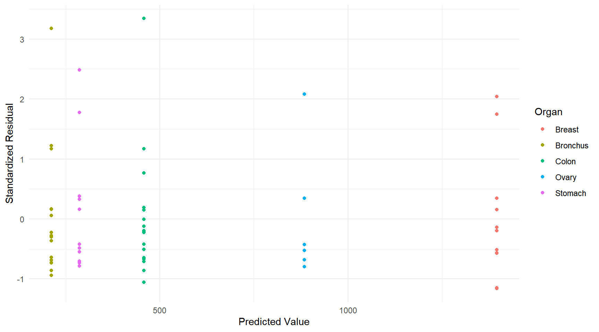

You can also download a PDF copy of this lecture.
Iteratively weighted least squares can be used when we assume that the variance is proportional to a function of the mean so that \[
\text{Var}(Y_i) \propto h[E(Y_i)],
\] where \(h\) is some specified function, implying that our weights should be \[
w_i = \frac{1}{h[E(Y_i)]}.
\] Because \(E(Y_i)\) is unknown we can use the estimate \(\hat{y}_i\) to obtain weights \[
w_i = \frac{1}{h(\hat{y}_i)}.
\]
Because \(\hat{y}_i\) depends on the weights used in the weighted least squares algorithm, and \(w_i\) depends on \(\hat{y}_i\), we can use the following algorithm known as iteratively weighted least squares.
Estimate the model using ordinary least squares where all \(w_i\) = 1.
Compute weights as \(w_i = 1/h(\hat{y}_i)\).
Estimate the model using weighted least squares with the weights \(w_i = 1/h(\hat{y}_i)\).
The second and third steps can be repeated until the estimates and thus the weights stop changing. Typically only a few iterations are necessary.
Example: Consider again following data from a study on the effects of fuel reduction on biomass.
library(trtools) # for biomass data
m.ols <- lm(suitable ~ -1 + treatment:total, data = biomass)
summary(m.ols)$coefficients Estimate Std. Error t value Pr(>|t|)
treatmentn:total 0.1056 0.04183 2.524 1.31e-02
treatmenty:total 0.1319 0.01121 11.773 7.61e-21d <- expand.grid(treatment = c("n","y"), total = seq(0, 2767, length = 10))
d$yhat <- predict(m.ols, newdata = d)
p <- ggplot(biomass, aes(x = total, y = suitable, color = treatment)) +
geom_point() + geom_line(aes(y = yhat), data = d) + theme_minimal() +
labs(x = "Total Biomass (kg/ha)", y = "Suitable Biomass (kg/ha)",
color = "Treatment")
plot(p)
biomass$yhat <- predict(m.ols)
biomass$rest <- rstudent(m.ols)
p <- ggplot(biomass, aes(x = yhat, y = rest, color = treatment)) +
geom_point() + theme_minimal() +
labs(x = "Predicted Value", y = "Studentized Residual",
color = "Treatment")
plot(p) Assume that \(\text{Var}(Y_i) \propto E(Y_i)\), which means the weights should be \(w_i = 1/E(Y_i)\). We can program the iteratively weighted least squares algorithm as follows.
biomass$w <- 1 # initial weights are all equal to one
for (i in 1:5) {
m.wls <- lm(suitable ~ -1 + treatment:total, weights = w, data = biomass)
print(coef(m.wls)) # optional
biomass$w <- 1 / predict(m.wls)
}treatmentn:total treatmenty:total
0.1056 0.1319
treatmentn:total treatmenty:total
0.1155 0.1578
treatmentn:total treatmenty:total
0.1155 0.1578
treatmentn:total treatmenty:total
0.1155 0.1578
treatmentn:total treatmenty:total
0.1155 0.1578 Now let’s take a look at the residuals.
biomass$yhat <- predict(m.wls)
biomass$rest <- rstudent(m.wls)
p <- ggplot(biomass, aes(x = yhat, y = rest, color = treatment)) +
geom_point() + theme_minimal() +
labs(x = "Predicted Value", y = "Studentized Residual",
color = "Treatment")
plot(p) That may not be quite enough. Suppose we assume that \(\text{Var}(Y_i) \propto E(Y_i)^p\) where \(p\) = 2.
biomass$w <- 1 # initial weights are all equal to one
for (i in 1:5) {
m.wls <- lm(suitable ~ -1 + treatment:total, weights = w, data = biomass)
biomass$w <- 1 / predict(m.wls)^2
}Now let’s take a look at the residuals.
biomass$yhat <- predict(m.wls)
biomass$rest <- rstudent(m.wls)
p <- ggplot(biomass, aes(x = yhat, y = rest, color = treatment)) +
geom_point() + theme_minimal() +
labs(x = "Predicted Value", y = "Studentized Residual",
color = "Treatment")
plot(p) Better. Maybe too much? We could try \(p\) = 1.5 or something like that. The residuals do get a little strange for higher predicted values, but we’ll leave it here.
The model is \(E(S_i) = \beta_1n_it_i + \beta_2y_it_i\), where \(n_i\) and \(y_i\) are indicator variables for if the \(i\)-th plot was treated or not by fuel reduction. We can also write the model as \[ E(S_i) = \begin{cases} \beta_1t_i, & \text{if the $i$-th plot was not treated by fuel reduction,} \\ \beta_2t_i, & \text{if the $i$-th plot was treated by fuel reduction}. \end{cases} \] We can use \(\beta_2-\beta_1\) for inferences about the treatment effect.
lincon(m.ols, a = c(-1,1)) estimate se lower upper tvalue df pvalue
(-1,1),0 0.02634 0.0433 -0.05953 0.1122 0.6082 104 0.5444lincon(m.wls, a = c(-1,1)) estimate se lower upper tvalue df pvalue
(-1,1),0 0.06386 0.02359 0.01708 0.1106 2.707 104 0.007937The contrast function from the trtools package can also do this. It can make inferences for a difference of differences.
contrast(m.wls,
a = list(treatment = "y", total = 1),
b = list(treatment = "y", total = 0),
u = list(treatment = "n", total = 1),
v = list(treatment = "n", total = 0)) estimate se lower upper tvalue df pvalue
0.06386 0.02359 0.01708 0.1106 2.707 104 0.007937This estimates \(E(Y_a) - E(Y_b) - [E(Y_u) - E(Y_v)]\). This can also be done using the emtrends function from the emmeans package.
library(emmeans)
emtrends(m.wls, ~treatment, var = "total") # estimate slopes treatment total.trend SE df lower.CL upper.CL
n 0.125 0.0183 104 0.0888 0.161
y 0.189 0.0149 104 0.1593 0.219
Confidence level used: 0.95 pairs(emtrends(m.wls, ~ treatment, var = "total")) # estimate difference between slopes contrast estimate SE df t.ratio p.value
n - y -0.0639 0.0236 104 -2.707 0.0079Recall that both the emmeans and trtools packages have a contrast function. To avoid conflicts or having to use trtools::contrast to call te contrast function from the trtools package later, we can unload the emmeans package usin detach.
detach(package:emmeans)Yet another approach to compare the slopes is to change the parameterization. Consider the following model.
m.wls <- lm(suitable ~ -1 + total + total:treatment, weights = w, data = biomass)
summary(m.wls)$coefficients Estimate Std. Error t value Pr(>|t|)
total 0.18892 0.01493 12.656 8.836e-23
total:treatmentn -0.06386 0.02359 -2.707 7.937e-03From summary we can see that this model can be written as \[
E(S_i) = \beta_1t_i + \beta_2t_in_i,
\]
where \(n_i\) is an indicator variable where \(n_i\) = 1 if the treatment was not appiled to the \(i\)-th plot, add \(n_i\) = 0 otherwise, so we can also write the model as \[ E(S_i) = \begin{cases} (\beta_1 + \beta_2)t_i, & \text{if the $i$-th plot was not treated by fuel reduction}, \\ \beta_1t_i, & \text{if the $i$-th plot was treated by fuel reduction}. \end{cases} \] Note that the meaning of \(\beta_1\) and \(\beta_2\) have changed here. The slopes of the lines with and without treatment are \(\beta_1\) and \(\beta_1 + \beta_2\), respectively, and the difference between the slopes is \(\beta_1 - (\beta_1 + \beta_2) = -\beta_2\). So inferences for \(\beta_2\) are for the difference in the slopes (after we reverse the sign). Although not necessary, we can change the reference category to avoid having to reverse the sign.
biomass$treatment <- relevel(biomass$treatment, ref = "y")
m.wls <- lm(suitable ~ -1 + total + total:treatment, weights = w, data = biomass)
summary(m.wls)$coefficients Estimate Std. Error t value Pr(>|t|)
total 0.12506 0.01827 6.847 5.428e-10
total:treatmenty 0.06386 0.02359 2.707 7.937e-03Now the model can be written as \[
E(S_i) = \beta_1t_i + \beta_2t_in_i,
\] or \[
E(S_i) =
\begin{cases}
\beta_1t_i, & \text{if the $i$-th plot was not treated by fuel reduction}, \\
(\beta_1+\beta_2)t_i, & \text{if the $i$-th plot was treated by fuel reduction}.
\end{cases}
\] Note: For some reason the reference category (y) is getting an indicator variable here, where normally it does not. I am not sure if this is a bug or intentional, but it appears to be due to the somewhat unusual parameterization I am using.
Example: Consider the following data where variability appears to vary by treatment.
library(trtools) # for pulse data
p <- ggplot(pulse, aes(x = pulse1, y = pulse2, color = treatment)) +
geom_point() + theme_minimal() +
labs(x = "Pulse Before", y = "Pulse After", color = "Treatment") +
theme(legend.position = c(0.85,0.2))
plot(p) There is one case with missing values on pulse1 and pulse2.
subset(pulse, !complete.cases(pulse)) # show observations with missing data height weight age gender smokes alcohol exercise treatment pulse1 pulse2 year
76 173 64 20 female no yes moderate sat NA NA 97This will cause problems so we are going to remove it.
pulse <- subset(pulse, complete.cases(pulse)) # overwrite pulse with only complete casesLet’s consider a simple linear model.
m <- lm(pulse2 ~ treatment + pulse1 + treatment:pulse1, data = pulse)
summary(m)$coefficients Estimate Std. Error t value Pr(>|t|)
(Intercept) 59.41757 10.4467 5.68767 1.171e-07
treatmentsat -51.25896 15.7451 -3.25554 1.524e-03
pulse1 0.89363 0.1357 6.58544 1.841e-09
treatmentsat:pulse1 -0.01437 0.2049 -0.07011 9.442e-01pulse$yhat <- predict(m)
pulse$rest <- rstudent(m)
p <- ggplot(pulse, aes(x = yhat, y = rest, color = treatment)) +
geom_point() + theme_minimal() +
labs(x = "Predicted Value", y = "Studentized Residual",
color = "Treatment") +
theme(legend.position = c(0.8,0.2))
plot(p) Consider that the model assumed by lm is \[\begin{align}
E(Y_i) & = \beta_0 + \beta_1t_i + \beta_2x_i + \beta_3t_ix_i, \\
\text{Var}(Y_i) & = \sigma^2,
\end{align}\] where \(Y_i\) is the second pulse measurement, \(t_i\) is an indicator variable for the treatment (i.e., \(t_i\) = 1 if the \(i\)-th observation was from the sitting treatment condition, and \(t_i\) = 0 otherwise), and \(x_i\) is the first pulse measurement. Maybe it would make sense to have something like \[
\text{Var}(Y_i) =
\begin{cases}
\sigma^2_s, & \text{if the $i$-th observation is from the sitting treatment}, \\
\sigma^2_r, & \text{if the $i$-th observation is from the running treatment}.
\end{cases}
\] We can estimate such a model using the gls function from the nlme package.
library(nlme) # should come with R
m <- gls(pulse2 ~ treatment + pulse1 + treatment:pulse1, data = pulse,
method = "ML", weights = varIdent(form = ~ 1|treatment))
summary(m)Generalized least squares fit by maximum likelihood
Model: pulse2 ~ treatment + pulse1 + treatment:pulse1
Data: pulse
AIC BIC logLik
763.1 779.3 -375.6
Variance function:
Structure: Different standard deviations per stratum
Formula: ~1 | treatment
Parameter estimates:
sat ran
1.000 5.723
Coefficients:
Value Std.Error t-value p-value
(Intercept) 59.42 15.755 3.771 0.0003
treatmentsat -51.26 16.058 -3.192 0.0019
pulse1 0.89 0.205 4.367 0.0000
treatmentsat:pulse1 -0.01 0.209 -0.069 0.9452
Correlation:
(Intr) trtmnt pulse1
treatmentsat -0.981
pulse1 -0.980 0.962
treatmentsat:pulse1 0.962 -0.980 -0.981
Standardized residuals:
Min Q1 Med Q3 Max
-2.0920 -0.7688 0.1026 0.5886 2.1968
Residual standard error: 3.634
Degrees of freedom: 109 total; 105 residualNote the different syntax for extracting standardized residuals.
pulse$yhat <- predict(m)
pulse$resz <- residuals(m, type = "p") # note different syntax
p <- ggplot(pulse, aes(x = yhat, y = resz, color = treatment)) +
geom_point() + theme_minimal() +
labs(x = "Predicted Value", y = "Standardized Residual",
color = "Treatment")
plot(p) Here is an example with the CancerSurvival data.
library(Stat2Data)
data(CancerSurvival)
m <- gls(Survival ~ Organ, data = CancerSurvival,
method = "ML", weights = varIdent(form = ~ 1|Organ))
summary(m)Generalized least squares fit by maximum likelihood
Model: Survival ~ Organ
Data: CancerSurvival
AIC BIC logLik
976.8 998.4 -478.4
Variance function:
Structure: Different standard deviations per stratum
Formula: ~1 | Organ
Parameter estimates:
Stomach Bronchus Colon Ovary Breast
1.0000 0.6119 1.2455 3.0141 3.5504
Coefficients:
Value Std.Error t-value p-value
(Intercept) 1395.9 371.0 3.763 0.0004
OrganBronchus -1184.3 374.5 -3.162 0.0025
OrganColon -938.5 385.5 -2.435 0.0179
OrganOvary -511.6 565.2 -0.905 0.3691
OrganStomach -1109.9 383.2 -2.896 0.0053
Correlation:
(Intr) OrgnBr OrgnCl OrgnOv
OrganBronchus -0.991
OrganColon -0.962 0.953
OrganOvary -0.656 0.650 0.632
OrganStomach -0.968 0.959 0.932 0.635
Standardized residuals:
Min Q1 Med Q3 Max
-1.1613 -0.6824 -0.2878 0.1748 3.3435
Residual standard error: 332.7
Degrees of freedom: 64 total; 59 residualCancerSurvival$yhat <- predict(m)
CancerSurvival$resz <- residuals(m, type = "p")
p <- ggplot(CancerSurvival, aes(x = yhat, y = resz, color = Organ)) +
geom_point() + theme_minimal() +
labs(x = "Predicted Value", y = "Standardized Residual", color = "Organ")
plot(p) Comments about parametric models for heteroscedasticity.
Advantages: Potentially very effective if we can specify an accurate model for the variance.
Disadvantages: If we do not specify an accurate model for the variance, it may bias estimation of parameters concerning the expected response.
The idea is to estimate the model parameters using ordinary least squares, but estimate the standard errors in such a way that we do not assume heteroscedasticity. This is sometimes called heteroscedastic consistent standard errors, robust standard errors, or sandwich estimators.
Example: Consider again the cancer survival data.
m <- lm(Survival ~ Organ, data = CancerSurvival)The sandwich package provides resources for using heteroscedastic-consistent standard errors. Technically, what is being estimated is the covariance matrix of the parameter estimators.
library(sandwich) # for vcovHC used below
vcov(m) # bad estimate if there is heteroscedasticity (Intercept) OrganBronchus OrganColon OrganOvary OrganStomach
(Intercept) 40752 -40752 -40752 -40752 -40752
OrganBronchus -40752 67121 40752 40752 40752
OrganColon -40752 40752 67121 40752 40752
OrganOvary -40752 40752 40752 115464 40752
OrganStomach -40752 40752 40752 40752 75235vcovHC(m) # better estimate if there is heteroscedasticity (Intercept) OrganBronchus OrganColon OrganOvary OrganStomach
(Intercept) 153504 -153504 -153504 -153504 -153504
OrganBronchus -153504 156256 153504 153504 153504
OrganColon -153504 153504 164908 153504 153504
OrganOvary -153504 153504 153504 394879 153504
OrganStomach -153504 153504 153504 153504 163498The square root of the diagonal elements are the standard errors.
sqrt(diag(vcov(m))) # bad estimates of the standard errors (Intercept) OrganBronchus OrganColon OrganOvary OrganStomach
201.9 259.1 259.1 339.8 274.3 sqrt(diag(vcovHC(m))) # better estimates of the standard errors (Intercept) OrganBronchus OrganColon OrganOvary OrganStomach
391.8 395.3 406.1 628.4 404.3 But the usual way to interface with the functions in the sandwich package is through other functions.
Estimate Std. Error t value Pr(>|t|) 2.5 % 97.5 %
(Intercept) 1395.9 201.9 6.915 3.770e-09 992 1799.9
OrganBronchus -1184.3 259.1 -4.571 2.530e-05 -1703 -665.9
OrganColon -938.5 259.1 -3.622 6.083e-04 -1457 -420.1
OrganOvary -511.6 339.8 -1.506 1.375e-01 -1192 168.4
OrganStomach -1109.9 274.3 -4.046 1.533e-04 -1659 -561.1confint(m) # bad confidence intervals due to bad standard error estimates 2.5 % 97.5 %
(Intercept) 992 1799.9
OrganBronchus -1703 -665.9
OrganColon -1457 -420.1
OrganOvary -1192 168.4
OrganStomach -1659 -561.1library(lmtest) # for coeftest and coefci used below
coeftest(m, vcov = vcovHC) # better standard error estimates
t test of coefficients:
Estimate Std. Error t value Pr(>|t|)
(Intercept) 1396 392 3.56 0.00073 ***
OrganBronchus -1184 395 -3.00 0.00400 **
OrganColon -938 406 -2.31 0.02434 *
OrganOvary -512 628 -0.81 0.41886
OrganStomach -1110 404 -2.74 0.00801 **
---
Signif. codes: 0 '***' 0.001 '**' 0.01 '*' 0.05 '.' 0.1 ' ' 1coefci(m, vcov = vcovHC) # better confidence intervals 2.5 % 97.5 %
(Intercept) 611.9 2179.9
OrganBronchus -1975.3 -393.3
OrganColon -1751.1 -125.9
OrganOvary -1769.0 745.8
OrganStomach -1919.0 -300.8Both lincon and contrast will accept a fcov argument to provide a function to estimate standard errors.
lincon(m, fcov = vcovHC) estimate se lower upper tvalue df pvalue
(Intercept) 1395.9 391.8 611.9 2179.9 3.5628 59 0.0007337
OrganBronchus -1184.3 395.3 -1975.3 -393.3 -2.9961 59 0.0039950
OrganColon -938.5 406.1 -1751.1 -125.9 -2.3111 59 0.0243421
OrganOvary -511.6 628.4 -1769.0 745.8 -0.8141 59 0.4188611
OrganStomach -1109.9 404.3 -1919.0 -300.8 -2.7449 59 0.0080080organs <- sort(unique(CancerSurvival$Organ)) # sorted organ names
contrast(m, a = list(Organ = organs),
cnames = organs, fcov = vcovHC) estimate se lower upper tvalue df pvalue
Breast 1395.9 391.80 611.93 2179.9 3.563 59 7.337e-04
Bronchus 211.6 52.46 106.61 316.6 4.033 59 1.604e-04
Colon 457.4 106.79 243.72 671.1 4.283 59 6.884e-05
Ovary 884.3 491.30 -98.75 1867.4 1.800 59 7.698e-02
Stomach 286.0 99.97 85.96 486.0 2.861 59 5.836e-03lincon(m, a = c(1,0,0,0,1), fcov = vcovHC) estimate se lower upper tvalue df pvalue
(1,0,0,0,1),0 286 99.97 85.96 486 2.861 59 0.005836You can use a similar approach with the emmeans function from the emmeans package, but there the argument is vcov.
library(emmeans)
emmeans(m, ~Organ, vcov = vcovHC) Organ emmean SE df lower.CL upper.CL
Breast 1396 391.8 59 611.9 2180
Bronchus 212 52.5 59 106.6 317
Colon 457 106.8 59 243.7 671
Ovary 884 491.3 59 -98.8 1867
Stomach 286 100.0 59 86.0 486
Confidence level used: 0.95 pairs(emmeans(m, ~Organ, vcov = vcovHC), adjust = "none", infer = TRUE) contrast estimate SE df lower.CL upper.CL t.ratio p.value
Breast - Bronchus 1184.3 395 59 393 1975.3 2.996 0.0040
Breast - Colon 938.5 406 59 126 1751.1 2.311 0.0243
Breast - Ovary 511.6 628 59 -746 1769.0 0.814 0.4189
Breast - Stomach 1109.9 404 59 301 1919.0 2.745 0.0080
Bronchus - Colon -245.8 119 59 -484 -7.7 -2.066 0.0432
Bronchus - Ovary -672.7 494 59 -1661 315.9 -1.362 0.1785
Bronchus - Stomach -74.4 113 59 -300 151.5 -0.659 0.5124
Colon - Ovary -426.9 503 59 -1433 579.1 -0.849 0.3992
Colon - Stomach 171.4 146 59 -121 464.1 1.172 0.2460
Ovary - Stomach 598.3 501 59 -405 1601.6 1.193 0.2375
Confidence level used: 0.95 Use the function waldtest in place of anova when using heteroscedastic-consistent standard errors.
m.full <- lm(Survival ~ Organ, data = CancerSurvival)
m.null <- lm(Survival ~ 1, data = CancerSurvival)
waldtest(m.null, m.full, vcov = vcovHC)Wald test
Model 1: Survival ~ 1
Model 2: Survival ~ Organ
Res.Df Df F Pr(>F)
1 63
2 59 4 3.52 0.012 *
---
Signif. codes: 0 '***' 0.001 '**' 0.01 '*' 0.05 '.' 0.1 ' ' 1Comments about heteroscedastic-consistent standard errors:
Advantages: Does not require us to specify a variance structure/function. We let the data inform the estimator.
Disadvantages: Highly dependent on the data to help produce better estimates of the standard errors, and tends to work well only if \(n\) is relatively large.
Note: There are a variety of variations of the “sandwich” estimator. Different estimators can be specified through the type argument to vcovHC so instead of writing vcov = vcovHC or fcov = vcovHC we write vcov = function(m) vcovHC(m, type = "HC0") or vcov = function(m) vcovHC(m, type = "HC0") if we wanted to use that particular type of estimator (sometimes called “White’s estimator”).